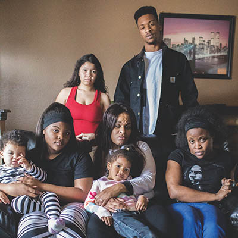

Murder in the city
Tulsa’s homicide rate is on the rise—but why?

Chestine Gooden holds a wedding portrait of herself and husband Jeffery Gooden, who was killed in Tulsa on January 1, 2017
Valerie Grant
Bullets exploded like fireworks early in the afternoon on January 1, heralding not only the beginning of a new year, but the city’s first homicide of 2017.
Two of Jeffery Gooden’s eight children were preparing birthday festivities for another sister. Mercedes, who’d just moved into the Riverview Park Apartments four days earlier, stepped outside onto the cold ground in her bare feet and was met with shouts from two neighbors across the way, a couple of guys she didn’t know whom she would later describe as black men in their 20s with braids and dreadlocks.
“You’re trifling for not having shoes on,” one of them yelled.
“Get some shoes on,” the other echoed.
And then, when she wouldn’t answer, “Bitch, you hear me talking to you?”
“Do y’all got something better-ass to do than harass females?” she fired back. “You need to go find a job and leave me alone.”
At this, they rushed toward her, three women suddenly appearing alongside them. Mercedes scooped up her children, who were playing outside, and ran to her apartment, while these people, whom she said she didn’t know, circled her home. She called each of her parents and at least one of her siblings, repeating their threats: “Bitch, we’ll kill you and your kids.”
When Nyesha Scott, Mercedes’ sister, older by two years, arrived at the apartment complex, there didn’t appear to be anyone outside, but when Mercedes opened the door, her harassers approached, one gripping the butt of a gun he’d tucked into his waistband.
Nyesha tried to talk them down. “We don’t need no weapons.”
“Please, put the gun down.”
“No, no, no, we’re not doing this.”
Nyesha remembers one of the women saying, “We’re not here for no talking, we’re here to get down to business,” and one of the men: “We’re from Louisiana, this is how we get down.”
“My little brother Jamal came around the corner, thinking he saw one of the guys pull up his pants like he was getting ready to hit us,” Nyesha recalled later. “The guy pulled his gun out, pointed it past my face to my brother. After he pulled his gun out, I saw my daddy and my brother Christopher, and Christopher was on the phone with my mama. And they walk up, and the guy just started shooting.”
Jeffery Gooden grabbed his gun before heading toward his daughter’s apartment. His wife, Chestine Gooden, said he didn’t carry a firearm all the time; he thought he might need it to protect his children and grandchildren.
“He didn’t go out there for no trouble,” Chestine said, “he just wanted to keep the peace.”
But when the man who’d been fighting with his daughter started shooting, Gooden fired back, hitting one of the women in the leg. He was struck, too, multiple times, and his daughter said he dropped to his knees and looked skyward before falling onto his back. Tears ran down his cheeks. Chestine, still on the phone with Christopher, screamed for someone to tell her who’d been shot.
Nyesha says she attempted CPR, but Jeffery Gooden was pronounced dead at St. John Medical Center. The woman he’d struck was treated for her injuries and released.
2017 began a lot like 2016 had ended.
Last year, Tulsa saw a record number of homicides—82 as of December 31, or 20.5 murders per 100,000 residents. The previous record was 71 in 2009. From 2002 to 2015, the mean homicide rate was approximately 52 per year, or 14 murders per 100,000 residents—almost triple the national average.
2016’s homicide rate was four times the national average.
Homicide Unit Sgt. Dave Walker said 2016’s murders don’t appear to have a whole lot in common, other than proximity. Twenty-two of the homicides last year started with altercations between those involved, and 16 were domestic homicides.
“That puts 16 people real close to each other,” Walker said.
When people are closer together, they become better shots, he said.
Bullets are more likely to meet their target. Stabbings and brute force become more lethal.
At least 54 of the crimes involved guns, including the year’s seven officer-involved shootings. Ten were robberies gone wrong, and five resulted in the deaths of children.
Gang violence appears to be down—by Walker’s tally, only two of last year’s homicides were gang-related—but drugs and mental health played a role in last year’s statistics. Walker said PCP, a dissociative drug with hallucinogenic side effects, is making a comeback from its 1990s glory days; it played a role in at least four of last year’s homicides.
Walker responds to every homicide call the Tulsa Police Department receives—“whether it’s the middle of day or the middle of night”—along with at least two of his unit’s nine investigators (there’s a tenth investigator dedicated to cold cases). Sometimes the warrants and patrol units get involved if there’s a suspect to chase. Walker said his team also relies on the community to help solve the crimes—and currently, the unit boasts a 94-percent success rate.
“It doesn’t matter whether the police chief solves it or the trash driver solves it,” Walker said. “We want information and that’s how we respond.
“A lot of times we’re working with the transient community and people—people on PCP don’t want to wait around for cops to show up two days later. We try to get out to those people while it’s fresh in their minds. We get what we need from citizenry, get suspect identification and get help finding them. It’s not rocket science; it’s just work.”
Walker said he believes his officers have a good relationship with members of the community, and that’s why they’ve had so much success in solving murders.
“I think people respect what we do,” he said. “I think ‘The First 48’ [the A&E series has had camera crews embedded with Tulsa’s homicide unit since 2014] has something to do with it, I think open dialogue with the media has something to do with it. People see us more, they know what we’re up against. They know we’re not all-knowing. If citizens don’t want to take their protection of their community serious, they can blame us, but we’re not going to take the blame.”
But solving homicides won’t necessarily stop people from killing each other. How can a city like Tulsa lower its homicide rate by preventing the crimes from occurring in the first place?
“Every time there’s a murder, we look at it and say, ‘What could law enforcement have done, or somehow government intervention—how could we have stopped that murder?’ ” Walker said. “But when you and I are fighting and I pull a gun and shoot you, there’s not much we can do about that except take your gun away. And I’m not a big proponent of taking everyone’s guns.”
Walker said drug-addicted and mentally ill citizens seem to have more contact with law enforcement, and more methods for getting their hands on guns and other “instruments of destruction,” so “getting people off drugs and gainfully employed would be a big thing.”
He also, in a sort of roundabout way, spoke of criminal justice reform, saying, “Who do we want to incarcerate, people writing bad checks, or people killing
people?”
He mentioned Wanda Cooper, a 60-year-old woman who was stabbed to death on December 27 by a man who was arrested on December 4 with a loaded firearm and a trafficking weight of heroin. Two weeks later, he was released on bond and murdered Cooper.
“We can’t keep putting these people out there and expect good things to happen,” Walker said. “Why are we releasing people with handguns who’ve shown a propensity for violence when we’re keeping people—I don’t want to say my stuff is more important, because that gets me in trouble.”

I asked the family of Jeffery Gooden what they think the city should do to prevent homicides.
His widow, Chestine, didn’t hesitate.
“They need to clear these guns out the streets,” she said.
Nyesha thought for a moment and then said, “I don’t feel like there’s a way to prevent this type of violence. Because if a person got it in their mind they want to kill somebody, they’re going to do it. I just feel like staying out of that type of environment and staying out of the way is what will prevent it.”
Chestine said her husband and children had had run-ins with law enforcement in the past but that they’d “turned their lives around.” She moved her family to a quiet neighborhood in East Tulsa in an attempt to keep her children and 14 grandchildren away from crime, drugs, and gangs.
Chestine and Jeffery had just married in September, after 28 years together.
“He said to me, ‘Now we can grow old together.’ And they took him from me. They took part of my heart. I break down three or four times a day because I can’t take this. Every second I look for my husband to come around the corner.”
Chestine, who walks with a cane and a portable oxygen tank slung around her neck and suffers from a number of ailments, including Lupus, COPD, fibromyalgia, and heart disease, says her husband was the one who took care of her.
“He was a good person,” she said, “a deacon in the church and a hard-working man.”
The Gooden family sees Jeffery as a hero.
“I think if my dad and brother had not come up, he would have shot me first,” Nyesha said. “I think he drew attention toward himself to protect his kids. He basically saved us. He sacrificed himself for his kids.”
“Both sides have taken the childlike way out and are hiding from us,” Walker said. “We will find out who and what transpired probably only to resolve the case by self-defense or justifiable. Even though the original reason is sophomoric.”
The Goodens say they’ve given the police all the information they have, and now they want justice for their husband and father. “Get them off the street.”
Jeffery Gooden’s murder is, at the time of this writing, still unsolved. In the two weeks since, Tulsa has seen four more homicides.
For more from Holly, read her remembrance of Tulsa Crime Monthly publisher Cornell Williams.
.jpg)
.jpg)